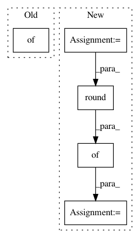

e15eb90b33c228e6ca8ec8aafa4cdc0c63f2dc04,homeassistant/components/thermostat/__init__.py,ThermostatDevice,state_attributes,#ThermostatDevice#,119
Before Change
@property
def state_attributes(self):
Returns optional state attributes.
data = {
ATTR_CURRENT_TEMPERATURE: self.hass.config.temperature(
self.current_temperature, self.unit_of_measurement)[0]
}
is_away = self.is_away_mode_on
if is_away is not None:
After Change
def state_attributes(self):
Returns optional state attributes.
thermostat_unit = self.unit_of_measurement
user_unit = self.hass.config.temperature_unit
data = {
ATTR_CURRENT_TEMPERATURE: round(convert(self.current_temperature,
thermostat_unit,
user_unit), 1),
ATTR_MIN_TEMP: round(convert(self.min_temp,
thermostat_unit,
user_unit), 0),
ATTR_MAX_TEMP: round(convert(self.max_temp,
thermostat_unit,
user_unit), 0)
}
is_away = self.is_away_mode_on
if is_away is not None:
In pattern: SUPERPATTERN
Frequency: 3
Non-data size: 5
Instances
Project Name: home-assistant/home-assistant
Commit Name: e15eb90b33c228e6ca8ec8aafa4cdc0c63f2dc04
Time: 2015-08-25
Author: Zyell@users.noreply.github.com
File Name: homeassistant/components/thermostat/__init__.py
Class Name: ThermostatDevice
Method Name: state_attributes
Project Name: haotianteng/Chiron
Commit Name: 3cdd0ddb974ba967e9d39e9b275bedc89badd73b
Time: 2018-09-07
Author: havens.teng@gmail.com
File Name: chiron/export_test.py
Class Name:
Method Name: input_output_list
Project Name: openai/baselines
Commit Name: fe06c6b4dbd9fc6763dae7e0fbe511c9861c6c0e
Time: 2018-09-14
Author: peterzhokhoff@gmail.com
File Name: baselines/common/vec_env/vec_monitor.py
Class Name: VecMonitor
Method Name: step_wait